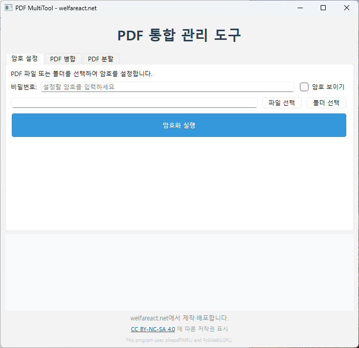

PDF를 합치고, 나누고, 비밀번호를 걸어주는 다목적 도구입니다. Antigravity를 활용해 기존의 계획들을 통합해 하나의 윈도우 실행 프로그램으로 만들었습니다.
📑
PDF 병합
여러 개의 PDF 파일을 하나로 합쳐 관리가 편리합니다.
✂️
PDF 분할
하나의 PDF를 원하는 페이지 단위로 나눌 수 있습니다.
🔒
비밀번호 설정
PDF 파일에 비밀번호를 걸어 보안을 강화할 수 있습니다.
🎯
탭 기반 인터페이스
각 기능들을 탭으로 구현하여 마우스 클릭만으로 원하는 기능을 사용할 수 있습니다.
⚡
설치 불필요
윈도우 실행 파일 하나로 되어 있어 설치 없이 바로 사용하실 수 있습니다.
참고: 압축 파일 안에 간단한 사용설명이 포함되어 있습니다.
Web Version (온라인 도구)
설치 없이 브라우저에서 즉시 PDF를 편집할 수 있습니다. (서버 저장 없이 브라우저 내에서 직접 처리)

PDF MultiTool 메인 화면